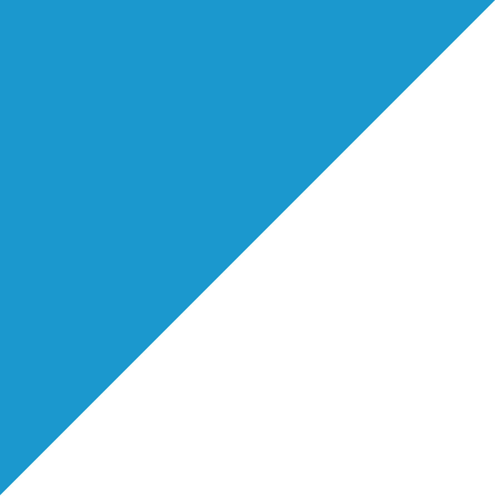

My name is João, and I am currently a master student in Bioengineering, on the field of
Biomedical Engineering. Thanks to my academic and extra-curricular training, I am highly skilled in the combined use
of engineering knowledge for healthcare applications.
I am mainly focused on the fields of Image Analysis, Signal Processing, and Machine Learning, but I also have extensive
training in diverse Programming applications, Electronics, Robotics, Sensors, Biomechanics, among others.
Personally, I have always been a fan of Design and Architecture, and in my projects I try to combine the useful and the
pleasant, putting a little bit of design in everything I do. It is, thus, especially interesting for me to build graphic
user interfaces for the software I develop.
Welcome to my website, where I present my education and training, my skills, and my past activities and projects.
Feel free to contact me with any question or proposal, I am always looking for new opportunities to develop my skills and
expand my knowledge.